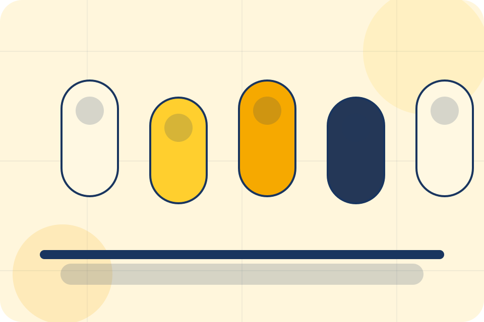
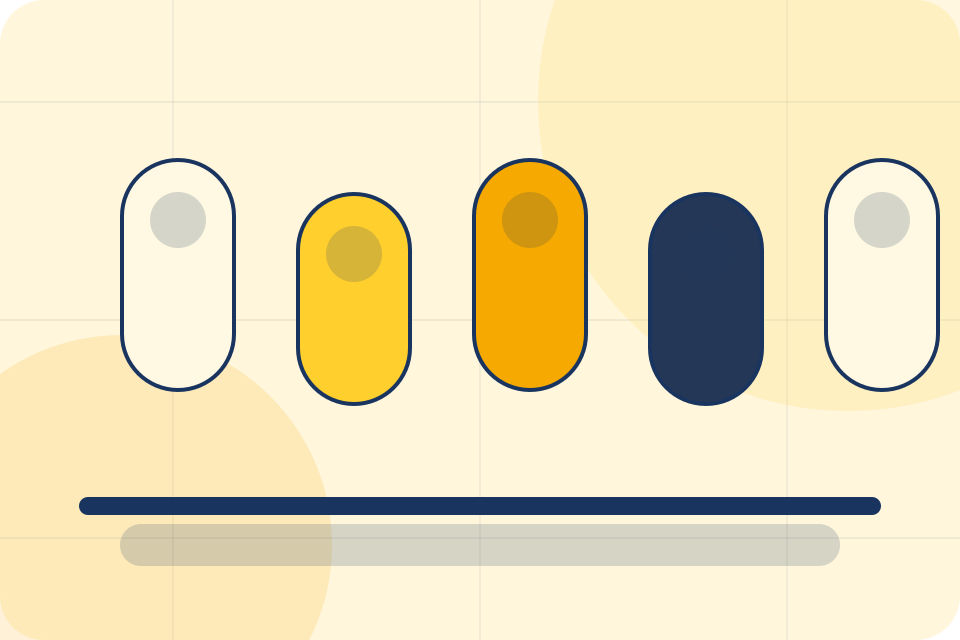
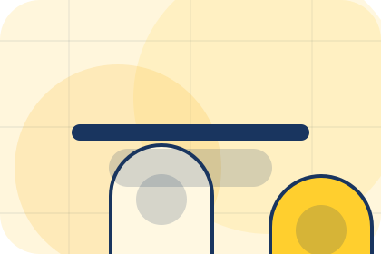
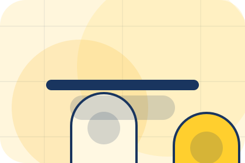
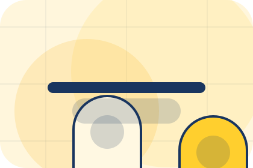
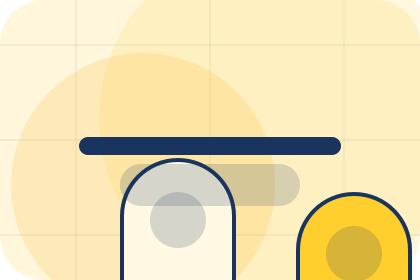
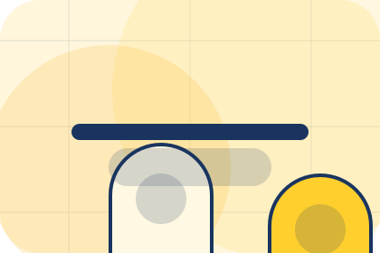
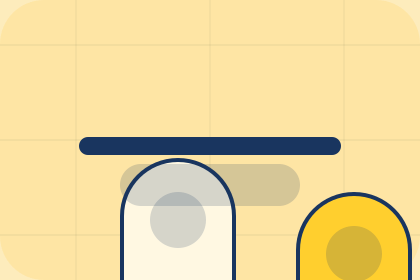

Contact / 01
Contact by Luma
Contact shaped for wellness, personal care & lifestyle services decisions.
Contact opens as a clear wellness decision hub: what Luma offers, who it helps, why it matters, and which route to take first.
The first screen combines positioning, proof, primary action, and fast internal navigation, so people can act immediately or compare the rest of the contact route with context.
Clear intakeHuman follow-upPractical reassurance
Product routine hero
Choose a starting profile
Select the closest route and Luma keeps the next step, proof, and follow-up expectation aligned with personal improvement and reassurance.

Contact / 02
Send the right details
Booking makes the contact path concrete: what to send, how the response works, and what Luma needs before visitors book a consultation.
The section reduces contact friction by naming the channel, expected detail, privacy path, and response expectation instead of dropping visitors into a generic form.
Book ConsultationLuma keeps booking practical: send the key details, choose the right contact route, and know what kind of reply to expect.
Book ConsultationProduct routine hero
Choose a starting profile
Select the closest route and Luma keeps the next step, proof, and follow-up expectation aligned with personal improvement and reassurance.
Contact / 03
Send the right details
Form makes the contact path concrete: what to send, how the response works, and what Luma needs before visitors book a consultation.
The section reduces contact friction by naming the channel, expected detail, privacy path, and response expectation instead of dropping visitors into a generic form.
Book ConsultationLuma keeps form practical: send the key details, choose the right contact route, and know what kind of reply to expect.
Book Consultation
Contact / 04
Send the right details
WhatsApp makes the contact path concrete: what to send, how the response works, and what Luma needs before visitors book a consultation.
The section reduces contact friction by naming the channel, expected detail, privacy path, and response expectation instead of dropping visitors into a generic form.
Book Consultation
Details
What information helps Luma respond with a useful answer instead of a generic reply.

Timing
How the visitor should think about response, urgency, location, or availability.

Reply
The expected next message keeps scope, timing, and the first practical step clear.
Contact / 05
Send the right details
Phone makes the contact path concrete: what to send, how the response works, and what Luma needs before visitors book a consultation.
The section reduces contact friction by naming the channel, expected detail, privacy path, and response expectation instead of dropping visitors into a generic form.
Book ConsultationWhat information helps Luma respond with a useful answer instead of a generic reply.
How the visitor should think about response, urgency, location, or availability.
The expected next message keeps scope, timing, and the first practical step clear.
Contact / 06
Send the right details
Location makes the contact path concrete: what to send, how the response works, and what Luma needs before visitors book a consultation.
The section reduces contact friction by naming the channel, expected detail, privacy path, and response expectation instead of dropping visitors into a generic form.
Book ConsultationDetails
What information helps Luma respond with a useful answer instead of a generic reply.
Timing
How the visitor should think about response, urgency, location, or availability.
Reply
The expected next message keeps scope, timing, and the first practical step clear.
Contact / 07
Send the right details
Hours makes the contact path concrete: what to send, how the response works, and what Luma needs before visitors book a consultation.
The section reduces contact friction by naming the channel, expected detail, privacy path, and response expectation instead of dropping visitors into a generic form.
Book ConsultationDetails
What information helps Luma respond with a useful answer instead of a generic reply.
Timing
How the visitor should think about response, urgency, location, or availability.
Reply
The expected next message keeps scope, timing, and the first practical step clear.
Contact / 09
Send the right details
Map makes the contact path concrete: what to send, how the response works, and what Luma needs before visitors book a consultation.
The section reduces contact friction by naming the channel, expected detail, privacy path, and response expectation instead of dropping visitors into a generic form.
Book ConsultationDetails
What information helps Luma respond with a useful answer instead of a generic reply.

Timing
How the visitor should think about response, urgency, location, or availability.

Reply
The expected next message keeps scope, timing, and the first practical step clear.
Contact / 10
Book Consultation
Luma closes the contact route with a clear action, a quick reminder of the value, and a low-friction way to book a consultation.
Visitors who are ready can use the primary action. Visitors who are still comparing can scan the section links, proof, and support routes before they book a consultation.
Book ConsultationThe final block keeps the choice simple: act now, compare one more proof route, or send enough detail for a focused response.
Book Consultationpersonal improvement and reassurance
Book Consultation
A routine-first wellness shop with offer strip, product education, rounded capsules, and evidence-led reassurance. Contact ends with a direct path to book a consultation, plus enough context for visitors who still need to compare.

Book ConsultationImportant notes before you act
Information is provided for planning and should be reviewed for the final client, location, and operating rules.